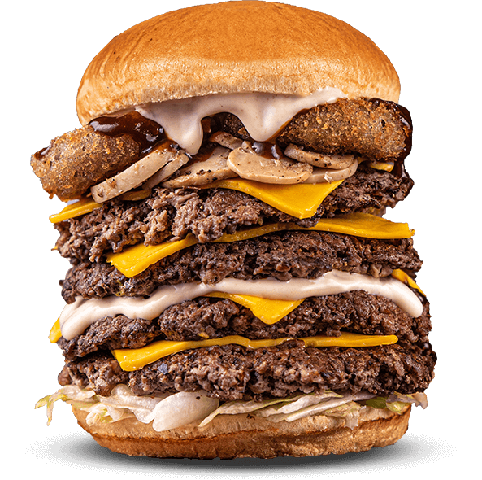

Now serving all your favourite burgers in soft-n-fresh potato bun. The buns are specially selected to enhance the flavour of each bite whether you are eating FireHouse or BigBang, Doppler or Quadra. Each bite into softness will make you love us even more!